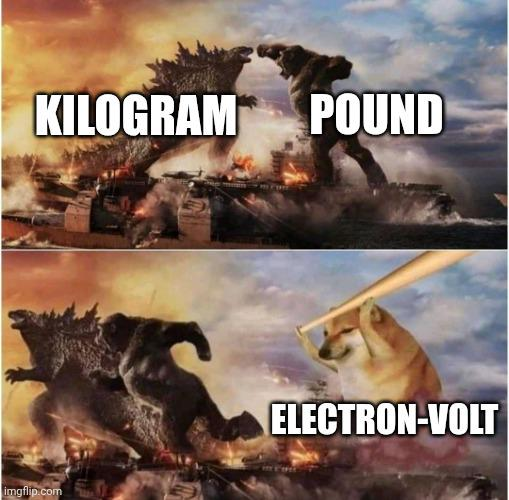

Day 08 - Workshop Day#
Fridays are reserved for your questions, homework issues, and general support

Announcements#
Homework 2 is due today (there is no penalty for late submission)
Homework 3 is posted (due next Friday; late after Sunday)
Afternoon help session (with Mihir, 3-5pm) on Zoom:
Zoom Link: https://msu.zoom.us/j/99550311023
password:
phy321msu
First midterm is coming up (assigned 16 Feb)
One exercise will ask you to get started on your final project planning.
Who are you gonna work with? What are you interested in studying? Start thinking about this!
At your table, chat for 3 minutes.#
What questions do you have?
⬆️ Make sure you upvote other’s questions.
HW 2; Exercise 5, ball thrown along a sloped ramp#
A ball is thrown with initial speed \(v_0\) up an inclined plane. The plane is inclined at an angle \(\phi\) above the horizontal, and the ball’s initial velocity is at an angle \(\theta\) above the plane. Choose axes with \(x\) measured up the slope, \(y\) normal to the slope, and \(z\) across it.
5a: Write down Newton’s second law using these axes and find the ball’s position as a function of time. Make sure to include the FBD and any assumptions you make.
HW 2; Exercise 5, ball thrown along a sloped ramp#
A ball is thrown with initial speed \(v_0\) up an inclined plane. The plane is inclined at an angle \(\phi\) above the horizontal, and the ball’s initial velocity is at an angle \(\theta\) above the plane. Choose axes with \(x\) measured up the slope, \(y\) normal to the slope, and \(z\) across it.
5b: Show that the ball lands a distance
from its launch point. This is measured up the ramp (i.e., along it).
HW 2; Exercise 5, ball thrown along a sloped ramp#
A ball is thrown with initial speed \(v_0\) up an inclined plane. The plane is inclined at an angle \(\phi\) above the horizontal, and the ball’s initial velocity is at an angle \(\theta\) above the plane. Choose axes with \(x\) measured up the slope, \(y\) normal to the slope, and \(z\) across it.
5c: Show that for given \(v_0\) and \(\phi\), the maximum range up the inclined plane is:
HW 3; Exercise 3, Drag force#
We can observe that the models for linear and quadratic drag forces are given by:
where \(D\) is the “length scale” of the object (e.g., the diameter of the sphere), \(\eta\) is the viscosity of the fluid, \(\rho\) is the density of the fluid, \(A\) is the cross-sectional area of the object, and \(\kappa\) is a constant of order unity (larger for flat and blunt bodies; smaller for streamlined bodies).
Parts 3a and 3b#
The Reynolds number is defined as \(Re = \rho v D / \eta\). What is the physical meaning of this number? For a spherical object, show that the ratio of the quadratic drag force to the linear drag force is given by \(f_{quad}/f_{lin} = Re/48\). Use this to explain the physical meaning of the Reynolds number. Note: you may assume that \(\kappa = 0.25\) for a sphere.
Explain a situation where there would be a low Reynolds number. What about a high Reynolds number? Estimate the Reynolds number for a falling rain drop, a parachutist, a car, and a plane.